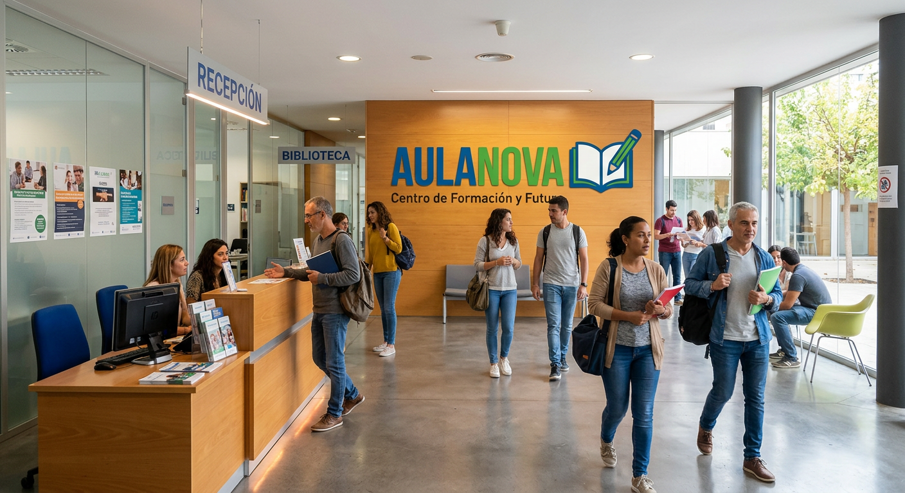

Modelos de Aprendizaje y Recursos Académicos
Plataforma dedicada a la organización y distribución de materiales educativos para el nivel secundaria. Nuestro objetivo es estructurar el contenido escolar de forma clara para estudiantes y docentes.

¿Para qué sirve?
Nuestra plataforma sirve para facilitar el acceso a una educación de calidad mediante el uso de tecnología innovadora e inclusiva. Su objetivo es que todas las personas puedan aprender y desarrollar nuevas habilidades, sin importar sus condiciones o dificultades de acceso a la educación. Además, busca reducir la brecha digital y preparar a las nuevas generaciones con conocimientos y habilidades que les ayuden a tener mejores oportunidades en el mundo laboral.
¿Cómo funciona?
La plataforma utiliza herramientas tecnológicas y recursos educativos para ofrecer un aprendizaje accesible, moderno y adaptado a las necesidades de los estudiantes. Los usuarios pueden acceder a contenidos educativos, actividades y recursos digitales desde diferentes dispositivos. De esta manera, se busca que aprender sea más fácil, flexible e inclusivo, aprovechando la tecnología para que más personas tengan las mismas oportunidades de desarrollar sus conocimientos y prepararse para el futuro.